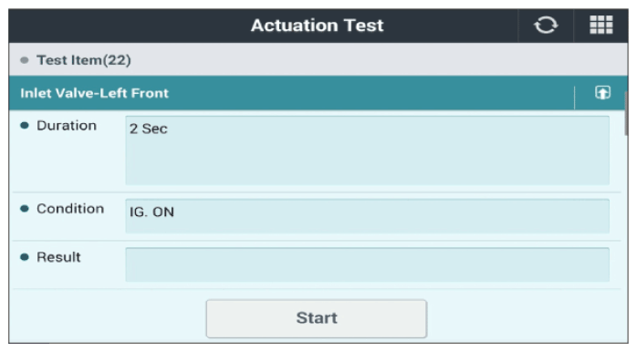

LEMON Manuals
: Even more car manuals for everyone: 1960-2025
Home
>>
Hyundai
>>
2022
>>
Elantra N Line, Standard Trans
>>
Repair and Diagnosis (Single Page)
>>
Brakes
>>
Anti-Lock Brakes
>>
Abs/Esp Diagnosis (Except HEV) (2 Of 2)
>>
DTC C2380-01: ABS/TCS/ESC (ESP) Valve Error
>>
DTC Information And Inspection
>>
Actuation Test
Actuation Test
Connect GDS to Data Link Connector (DLC).
Turn the ignition switch "ON" & engine "OFF".
Select the "Actuation Test" mode on the GDS.
Inspect operating status of all valves with Actuation Test.
Specification:
It's normal if operating sound is heard.

Courtesy of HYUNDAI MOTOR AMERICA